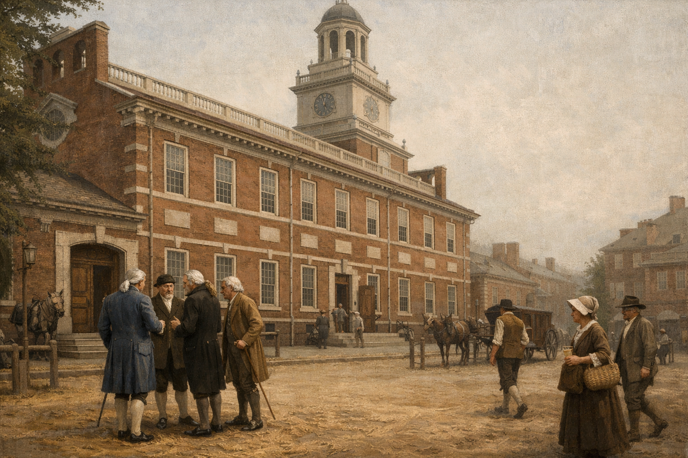
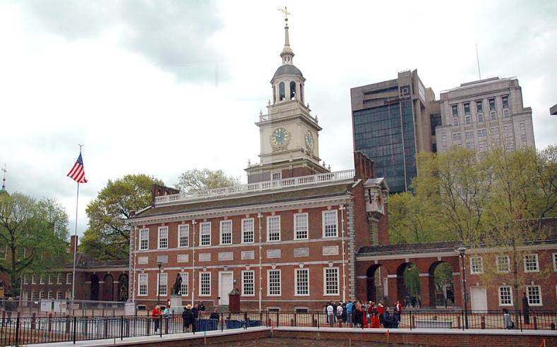
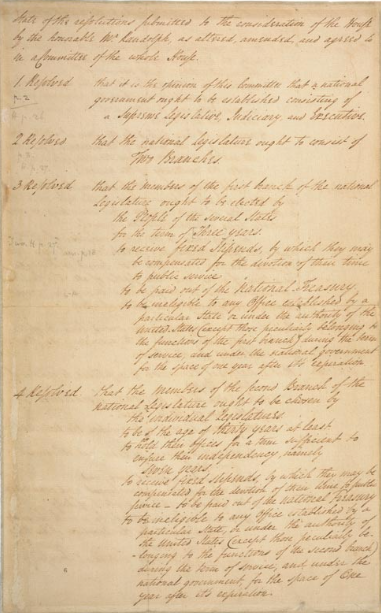
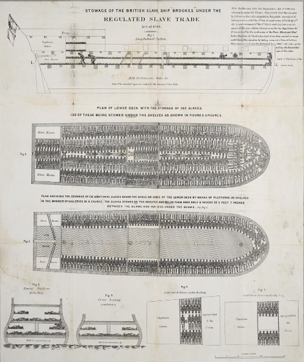
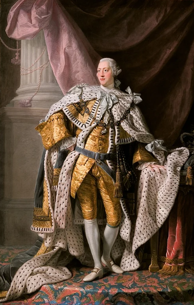
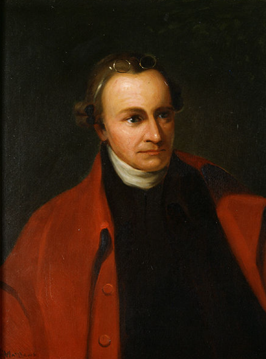
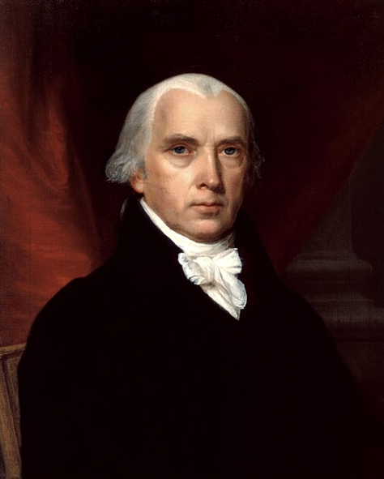
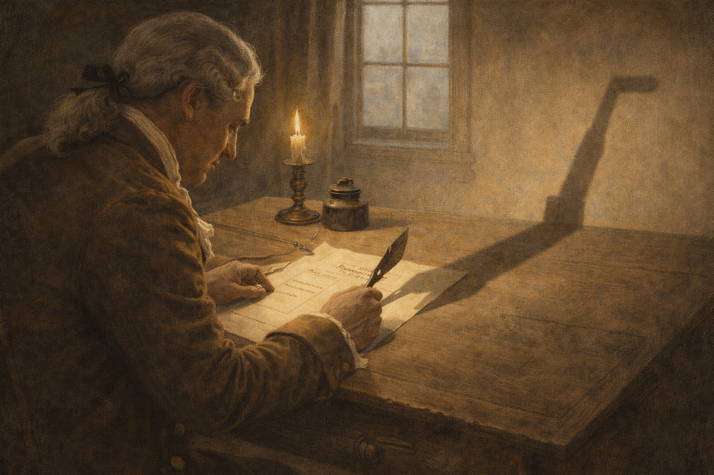

Core Objectives
- Contrast the Virginia Plan and the New Jersey Plan to explain the conflict between large and small states.
- Analyze the "Great Compromise" and how it established the structure of the legislative branch.
- Evaluate the role of slavery in the Constitutional Convention, specifically the "Dirty Compromise," the Three-Fifths clause, and the Fugitive Slave clause.
- Explain the debate over the Executive Branch and the creation of the Electoral College as a safeguard against "mobocracy."
- Compare the arguments of the Federalists and Anti-Federalists regarding the necessity of a Bill of Rights and the nature of republican government.
Key Terms
Constitutional Convention | James Madison | Alexander Hamilton | Virginia Plan | New Jersey Plan | Great Compromise | Bicameral Legislature | Three-Fifths Compromise | Slave Trade Clause | Fugitive Slave Clause | Separation of Powers | Checks and Balances | Electoral College | Federalists | Anti-Federalists | The Federalist Papers | Bill of Rights
Introduction: Forging a New Republic

Analysis Question: How might the strict secrecy of the Constitutional Convention have influenced the final design of the new government?
In May 1787, fifty-five delegates converged in Philadelphia to address the failing Articles of Confederation and the looming threat of instability highlighted by Shays' Rebellion. Though initially tasked with simply revising the existing government, visionary leaders instead embarked on a radical mission to build an entirely new framework from scratch. Throughout a sweltering, secretive summer, these elite Framers debated fiercely over representation, the deep moral and political divide over slavery, and the proper balance of executive power. The resulting Constitution was a complex web of compromises designed to prevent tyranny through a separation of powers while establishing a government strong enough to rule a vast continent. Ultimately, the intense battle over ratification forced the inclusion of a Bill of Rights, cementing a hybrid system that continues to define the American experiment today.
The Crisis and the Assembly
The summer of 1787 brought together America's wealthy aristocracy, including lawyers, planters, and revolutionary veterans, all united by a shared fear of "excessive democracy" and domestic unrest. Operating under a strict rule of secrecy in a sweltering Philadelphia room, they abandoned their mandate to merely revise the Articles of Confederation and instead set out to design a powerful new national government. This insulated environment allowed the delegates to speak freely, but it also ensured that the foundational document was crafted by the elite without the direct input of the common people.
The Gathering at Philadelphia

Caption: The exterior of the Pennsylvania State House, where delegates met in strict secrecy during the summer of 1787.
Why it Matters: The physical setting of the convention mirrored the incredible tension of the delegates' task to overhaul the government. The isolated, sweltering environment, combined with a strict rule of secrecy, allowed the elite framers to speak freely and forge compromises without fear of public backlash. This insulated setting ultimately enabled the peaceful overthrow of the existing framework to build an entirely new national structure from scratch.
Analysis Question: How did the strict rule of secrecy at the Pennsylvania State House influence the delegates' ability to design a new national government?
In May 1787, the future of the United States hung by a thread. The Articles of Confederation were rapidly failing; the individual states were hopelessly bickering over trade and boundaries, and the terrifying specter of Shays’ Rebellion still haunted the minds of the nation's elite. In this atmosphere of profound crisis, fifty-five delegates gathered in the Pennsylvania State House in Philadelphia. They were officially sent by twelve of the thirteen states—Rhode Island, deeply fearful of centralized power and fiercely protective of its paper money policies, outright refused to attend—with a strict mandate to "revise" the existing Articles.
However, the vanguard of the convention had no intention of mere revision. Leaders like the intense, bookish Virginian James Madison and the ambitious, brilliant New Yorker Alexander Hamilton recognized that the current government was fundamentally broken. They shared a common diagnosis: the United States was suffering from "excessive democracy," with state legislatures too responsive to the whims of debtor classes. Together, they intended to peacefully overthrow the existing government framework and build an entirely new, vastly stronger national structure from scratch.
The physical setting of the convention mirrored the incredible tension of their task. The summer of 1787 was sweltering, yet to ensure the absolute freedom of debate, the delegates voted for a strict Rule of Secrecy. Guards were posted at the heavy doors, and the windows were nailed shut to prevent eavesdroppers, leaving the delegates to debate in a hot, airless room while wearing wool coats and powdered wigs. Outside, thick layers of dirt and straw were laid on the cobblestones to dampen the sound of passing carriages. This absolute secrecy allowed them to speak their minds and forge compromises without fear of public backlash, but it also meant that the resulting document was essentially a conspiracy of the elite, designed entirely without the direct input of the common people.
Checkpoint
1. Why did the delegates at the Constitutional Convention implement a strict "Rule of Secrecy"?
The Architects of a New Republic
Caption: The high-backed mahogany chair used by George Washington as he presided over the Constitutional Convention.
Why it Matters: George Washington, a universally revered hero of the Revolution, lent an aura of unquestionable legitimacy to the elite gathering in Philadelphia. His presence in the presiding chair signaled to the American public that the convention was a serious, patriotic endeavor rather than a rogue assembly. This public trust was crucial for the architects of the new republic, who were proposing an elite-designed system without the direct input of the common people.
Analysis Question: Why was George Washington's role as the presiding officer critical to the public perception of the Constitutional Convention?
These fifty-five men represented the unquestionable aristocracy of America. They were highly educated lawyers, prosperous merchants, and wealthy planters who had much to lose if the young nation collapsed. They were a remarkably experienced group: more than half had served as officers in the Continental Army during the Revolution, and seven had previously signed the Declaration of Independence. They sought a system that would secure their property and maintain economic order, while simultaneously preserving the hard-won republican liberty they had fought for.
Among this elite group, the presence of two legendary figures lent the gathering an aura of unquestionable legitimacy. George Washington, the universally revered hero of the Revolution, was unanimously elected as the presiding officer of the convention. Though he spoke very little during the proceedings, his mere presence in the president's chair signaled to the American public that the convention was a serious and patriotic endeavor. Joining him was Benjamin Franklin of Pennsylvania, the internationally famous scientist and diplomat. At eighty-one years old, Franklin was the eldest delegate, and his witty, pragmatic interventions frequently helped soothe flaring tempers when the convention threatened to break apart over regional differences.
While Washington and Franklin provided the necessary gravity, younger delegates provided the intellectual fire, even as some of the most famous revolutionary giants were noticeably absent. James Madison emerged as the chief architect of the new government, taking exhaustive notes and arriving with a comprehensive blueprint for a powerful national state. Alexander Hamilton pushed the boundaries of the debate by passionately advocating for a near-monarchical executive branch. Meanwhile, Thomas Jefferson and John Adams could not influence the debates, as they were serving as diplomats in Paris and London, respectively. Furthermore, fiery patriot Patrick Henry "smelt a rat" and boycotted the convention entirely, foreshadowing the fierce resistance these architects would soon face when they presented their new Constitution to the American people.
Checkpoint
1. Which delegate is known as the "chief architect" of the new government due to his comprehensive blueprint and exhaustive note-taking?
Forging Compromise
The most explosive conflicts at the convention centered around how power would be distributed and how the new government would be structured. The delegates clashed over competing visions for the legislative branch, ultimately forging a system that balanced population-based representation with strict state equality. Simultaneously, cynical deals were struck regarding the enslaved population to keep the South in the union. Having settled the legislative disputes, the Framers then faced the daunting task of designing an executive branch capable of enforcing laws without degenerating into the monarchy they had just fought a war to escape.
The Struggle for Representation

Caption: A historical draft of the Virginia Plan, which proposed a radical restructuring of the national government into a bicameral legislature.
Why it Matters: The Virginia Plan sparked the most dangerous divide at the convention by proposing a powerful national government with a legislature based entirely on population. This blueprint threatened small states, leading directly to the bitter deadlock and eventual Great Compromise that shaped the modern Congress. The conflict over this proposal embedded a permanent tension between democratic principles and federalism within the American political system.
Analysis Question: How did the legislative structure proposed in the Virginia Plan differ from the system ultimately established by the Great Compromise?
The first and most dangerous divide was between the large states (like Virginia, Pennsylvania, and Massachusetts) and the small states (like Delaware, New Jersey, and Connecticut). The central question was simple but explosive: How should the states be represented in the new national government?
James Madison arrived in Philadelphia with a comprehensive blueprint known as the Virginia Plan. Presented by Edmund Randolph, it proposed a radical restructuring of the government. Madison did not want a "league of friendship"; he wanted a national government with the power to act directly on citizens, not just on states.
The Virginia Plan proposed a bicameral legislature (two houses). Crucially, representation in both houses would be based on population. This meant that Virginia, with its large population, would have vastly more power than Delaware. Furthermore, the national legislature would have the power to veto any state law it deemed unconstitutional or dangerous. To the small states, this looked like tyranny. They feared they would be swallowed up by the "large state monster," their interests ignored by a Congress dominated by Virginia and Pennsylvania.
The small states counterattacked. William Paterson of New Jersey introduced the New Jersey Plan. This plan essentially retained the structure of the Articles of Confederation: a unicameral legislature with equal representation for each state (one state, one vote). While it gave Congress new powers to tax and regulate commerce, it preserved the core principle of state sovereignty.
For weeks, the convention was deadlocked. The debate grew bitter. Gunning Bedford of Delaware threatened that if the large states tried to crush the small ones, "the small ones will find some foreign ally of more honor and good faith, who will take them by the hand and do them justice." The convention seemed on the verge of dissolving and plunging the nation into civil war.
Finally, in July, a committee led by Roger Sherman of Connecticut proposed a solution that blended the two plans. Known as the Great Compromise (or Connecticut Compromise), it created a bicameral Congress with a split personality, designed to balance the competing principles of democracy and federalism:
- The House of Representatives: Representation would be based on population (satisfying the large states/Virginia Plan) and elected directly by the people. This was the "democratic" house, holding the power of the purse.
- The Senate: Representation would be equal, with two senators per state regardless of size (satisfying the small states/New Jersey Plan). Originally, senators were elected by state legislatures, not the people, making this the "aristocratic" or "federal" house meant to check the passions of the mob.
This compromise saved the convention, but it came at a cost. It embedded a permanent tension in the American political system. A voter in Wyoming today has significantly more influence on the Senate than a voter in California, a disparity rooted in the deal struck in the heat of 1787.
Checkpoint
1. What was the primary difference between the Virginia Plan and the New Jersey Plan?
The "Ghost at the Banquet"

Caption: An 1788 abolitionist diagram showing the horrific conditions aboard the slave ship Brookes, highlighting the brutal reality of the international slave trade.
Why it Matters: Northern delegates viewed the international slave trade as a moral abomination, while Southern states demanded its protection to maintain their labor system. To save the convention, the Framers struck a pragmatically cynical deal, forbidding Congress from banning the importation of enslaved people for twenty years. This decision wove the horrific realities of slavery into the foundation of the new republic.
Analysis Question: How does the brutal reality of the international slave trade clarify the deep moral and economic divisions that led to the "Dirty Compromise"?
If representation was the most public fight, slavery was the most dangerous silence. The word "slave" does not appear in the Constitution—the Framers used euphemisms like "other persons" or "persons held to service"—but the institution of slavery shaped the document profoundly. The southern states, particularly South Carolina and Georgia, made it clear that they would not join a Union that threatened their labor system.
The debate over representation collided with the reality of slavery. Southern states wanted enslaved people to count as "people" for the purpose of determining representation in the House. This was purely a grab for political power; these states had no intention of giving slaves the right to vote or any legal rights. Conversely, they wanted slaves to count as "property" for the purpose of taxation. Northern states exposed the hypocrisy. Elbridge Gerry of Massachusetts asked, "Why should the blacks, who were property in the South, be in the rule of representation more than the cattle and horses of the North?"
The result was the cynical Three-Fifths Compromise. The delegates agreed that for both representation and taxation, each enslaved person would count as three-fifths of a free person. This clause had devastating long-term consequences. It gave the South disproportionate political power. For the next seventy years, Southern slaveholders would dominate the presidency, the Speakership of the House, and the Supreme Court, largely because of the "bonus" representation provided by their enslaved population. Thomas Jefferson would win the election of 1800 largely due to the extra electoral votes granted by the Three-Fifths clause.
The Deep South also demanded protection for the international slave trade. Many Northern delegates viewed the trade as a moral abomination. Gouverneur Morris of Pennsylvania delivered a fiery speech, calling slavery a "nefarious institution" and the "curse of heaven."
However, pragmatism defeated morality. The New England states wanted the national government to have the power to regulate commerce (to protect their shipping), while the South feared such power would be used to ban the slave trade. In late August, the two regions struck a deal that historian John Murrin calls the "Dirty Compromise."
- The South agreed to let Congress regulate commerce with a simple majority vote (helping New England shipping).
- The North agreed to the Slave Trade Clause, which forbade Congress from banning the importation of slaves for twenty years (until 1808).
- The North also agreed to the Fugitive Slave Clause, requiring that a "person held to service" who fled to another state must be "delivered up" to their owner.
With these compromises, the Constitution wove slavery into the fabric of the new republic. The Framers chose Union over abolition, kicking the can down the road to a future generation that would have to solve the issue with blood.
Checkpoint
1. What was the primary political goal of Southern states in supporting the Three-Fifths Compromise?
The Executive and the Fear of Monarchy

Caption: A royal portrait of King George III of Great Britain, the monarch whose absolute authority the American revolutionaries had just fought a war to escape.
Why it Matters: The Framers were terrified of creating an executive branch that would degenerate into the kind of monarchy they had recently overthrown. The memory of King George III's abuses drove the delegates to strictly limit presidential power. Consequently, they checked the single executive with a four-year term, the threat of impeachment, and a rigorous separation of powers.
Analysis Question: How did the historical memory of King George III's rule influence the specific constitutional limitations placed on the American presidency?
Having settled who would rule (representation), the Framers turned to how they would rule. The most difficult design challenge was the Executive Branch. The Articles of Confederation had failed because there was no executive to enforce the laws. But the Framers were terrified of creating a "fetus of monarchy." They remembered the abuses of King George III.
Some delegates, like Edmund Randolph, argued for a three-person executive council, fearing that a single man would inevitably become a tyrant. Others, like Alexander Hamilton, argued for a single executive elected for life—essentially an elected monarch. The convention eventually settled on a single President, but checked his power with a four-year term and the threat of impeachment.
The next question was: Who chooses the President? James Wilson of Pennsylvania proposed a direct popular vote, but he was voted down. The Framers did not trust the general public. As George Mason argued, allowing the people to elect the President would be as unnatural as "referring a trial of colors to a blind man." They feared a demagogue could manipulate the uneducated masses.
Instead, they created the Electoral College. This was a buffer system where states chose "electors"—presumably wise and experienced men—who would then cast the actual votes for President. It was a republican, not a democratic, solution, designed to ensure that the choice of leader was insulated from the "heat and ferment" of the populace.
To further prevent tyranny, they adopted the philosophy of Montesquieu: Separation of Powers.
- Legislative Branch (Congress): Makes the laws. It was designed to be the most powerful branch, holding the "power of the purse" and the power to declare war.
- Executive Branch (President): Enforces the laws. The President is Commander-in-Chief but cannot declare war or fund the army.
- Judicial Branch (Supreme Court): Interprets the laws. Though its power of "judicial review" (the ability to strike down laws) was not explicitly detailed in the text, it was implied.
These branches were tied together by Checks and Balances: The President can veto Congress; Congress can override the veto with a 2/3 vote; the Senate must confirm presidential appointments; and the Courts can judge the acts of both. It was a machine designed for friction, ensuring that change would be slow, deliberate, and broad-based.
Checkpoint
1. Why did the Framers establish the Electoral College rather than a direct popular vote for the President?
The Battle for Ratification
Once the framework of the new government was signed, it ignited a ferocious public debate between supporters of a strong central government and those who demanded explicit protections against federal overreach. This political war tested the very fabric of the new nation. Ultimately, the intense battle over ratification forced a crucial compromise, giving birth to the foundational rights of American citizens and cementing a hybrid system that continues to define the American experiment today.
Federalists vs. Anti-Federalists

Caption: A portrait of Patrick Henry, the fiery Virginia patriot who refused to attend the convention and became a leading voice of the Anti-Federalists.
Why it Matters: Anti-Federalist leaders represented the "Spirit of '76" and a deep suspicion of centralized power. They forcefully argued that the newly proposed government was too distant and elite, warning that it would inevitably become tyrannical without explicit protections for citizens. Their fierce opposition sparked a nationwide political war that forced the Federalists to defend and explain the Constitution.
Analysis Question: Why was Patrick Henry's fierce opposition as an Anti-Federalist significant to the national debate over the power of the new central government?
On September 17, 1787, thirty-nine delegates signed the Constitution. Benjamin Franklin, elderly and weeping, pointed to the sun carved on the back of George Washington’s chair. He noted that artists often found it difficult to distinguish a rising sun from a setting sun. "I have often... looked at that behind the President without being able to tell whether it was rising or setting," Franklin said. "But now at length I have the happiness to know that it is a rising and not a setting sun."
However, the battle was just beginning. The Constitution required ratification by nine states to take effect. This triggered a ferocious political war between two camps: the Federalists (who supported the new government) and the Anti-Federalists (who opposed it).
Led by Alexander Hamilton, James Madison, and John Jay, the Federalists argued that the Articles were a failure and that a strong central government was essential to protect the nation from foreign powers and domestic insurrections like Shays’ Rebellion.
To convince the skeptical public, specifically in New York, they wrote a series of 85 essays known as The Federalist Papers. These essays remain the most profound explanation of American government ever written.
- In Federalist No. 10, Madison turned political theory on its head. Conventional wisdom held that republics could only survive in small territories (like city-states) where everyone shared the same interests. Madison argued that a large republic was actually safer. In a large nation, there would be so many different factions (interest groups)—farmers, merchants, rich, poor, religious sects—that no single group could ever dominate the others. "Ambition must be made to counteract ambition."
- In Federalist No. 51, Madison explained the check-and-balance system: "If men were angels, no government would be necessary... In framing a government which is to be administered by men over men... you must first enable the government to control the governed; and in the next place oblige it to control itself."
The Anti-Federalists (including Patrick Henry, George Mason, and Samuel Adams) were not merely obstructionists. They represented the "Spirit of '76"—the deep suspicion of centralized power. Writing under names like "Brutus" and "Cato," they argued that the new Constitution created a distant, elite government that would inevitably become tyrannical. They feared the President would become a King, a standing army would oppress the people, and Congress would tax the states into oblivion. Most importantly, they argued that the Constitution lacked a Bill of Rights. Because the document listed what the government could do but not what it could not do, they warned that fundamental liberties like freedom of speech, religion, and the press would be lost without a written guarantee.
Checkpoint
1. What was the main argument presented by James Madison in Federalist No. 10?
A Narrow Victory

Caption: A portrait of James Madison, a leading Federalist who helped secure ratification by promising to immediately draft a Bill of Rights.
Why it Matters: The Federalists faced agonizingly close ratification votes and intense opposition from those fearing a tyrannical central government. To secure the necessary votes in divided states, leaders made a crucial concession, pledging that the first Congress would immediately fix the document. This promise to legally restrain the government ultimately tipped the balance of power and saved the Constitution.
Analysis Question: How did the Federalist promise to amend the Constitution directly influence the razor-thin ratification votes in divided states?
The ratification vote was agonizingly close across the nation, proving just how deeply divided the country remained over the new government structure. In Massachusetts, the Constitution survived by a narrow margin, passing 187 to 168. In Virginia, the fiery Anti-Federalist Patrick Henry roared against the document, and the Federalists managed to squeeze by with only 10 votes (89 to 79). The margins were even thinner in New York, where the new government was approved by a mere 3 votes.
The Federalists secured these razor-thin victories only because they made a crucial concession: they promised to fix the document. To secure the votes of wavering delegates, the Federalists pledged that the very first Congress would immediately add a Bill of Rights to the Constitution. This solemn promise tipped the balance of power. By June 1788, the necessary nine states had ratified the document, officially making the Constitution the supreme law of the land.
Ultimately, the irony of the founding era is that the Constitution was saved by its fiercest critics. While the Federalists successfully built the machine—the strong structural framework of the government—it was the Anti-Federalists who supplied the vital brakes by demanding the Bill of Rights. The resulting government was a uniquely American hybrid: it was strong enough to rule an entire continent, yet legally restrained from violating the liberties of its citizens.
Checkpoint
1. What crucial concession did the Federalists make to secure the ratification of the Constitution?
DECISION MAKERS | The Electoral College

Safeguard or Anachronism?
When the delegates at the Constitutional Convention reached Article II—the creation of the Presidency—they faced a dilemma that stumped them for weeks. They knew they needed a strong executive to enforce the laws (unlike the weak Articles of Confederation), but they were terrified of creating an American King. The hardest question was not what powers the President should have, but how to choose him.
The Options
The delegates debated three main methods, each with fatal flaws in their eyes:
- Election by Congress: This was the initial favorite. However, delegates realized this would make the President a puppet of the legislature, violating the separation of powers.
- Election by State Legislatures: This would make the President too indebted to the states, preventing the growth of a national consciousness.
- Direct Election by the People: This was proposed but soundly rejected. The delegates feared "mobocracy." They believed the average farmer in Georgia would never know enough about a candidate in Massachusetts to make an informed choice. As George Mason put it, letting the people choose the President would be like engaging a blind man to choose colors.
The Decision | A Buffer System
The solution was the Electoral College, a complex compromise proposed by the Committee on Eleven.
- Instead of voting for a President, citizens would vote for "electors"—a group of elite, educated men chosen by each state.
- These electors, presumably wise and detached from passion, would then convene to select the best man for the job.
- This system served as a buffer against the "excesses of democracy," ensuring that a demagogue could not sweep into power by manipulating public emotion.
The Impact
The Electoral College also settled a quiet but powerful tension between the North and South. If the President were elected by popular vote, the North (with more free citizens) would dominate. But the Electoral College was based on Congressional representation, which included the Three-Fifths Compromise. This gave the South extra power in selecting the President by counting their enslaved population, who could not vote, toward their electoral total.
Why It Matters
The Framers designed the system to filter the will of the people, not necessarily to reflect it perfectly. While the "electors" today are largely rubber stamps for the popular vote, the structure remains. It ensures that candidates must build a broad geographic coalition to win, rather than just racking up votes in diverse population centers, but it also creates the possibility—realized five times in U.S. history—that the winner of the popular vote does not become President.
Leadership Evaluation Questions
1. Analyze the Logic: Compare the delegates' fears of "mobocracy" with their fears of an "American King." How did the Electoral College attempt to solve both problems simultaneously?
2. Assess the Legacy: How did the inclusion of the Three-Fifths Compromise in the Electoral College's design shift the balance of political power toward the South during the early years of the Republic?
3. Evaluate Strategy: Given the modern availability of information and the 24-hour news cycle, does the original justification for a "buffer" between the voters and the presidency still serve its intended purpose, or has it become an obstacle to democratic expression?
Vocabulary Activity
Read the following historical narrative and fill in the numbered blanks using the correct terms from the Word Bank. Each term should be used exactly once.
The delegates also had to confront the divisive issue of slavery. Southern states wanted enslaved people to count for representation, leading to the cynical 8. , which counted each enslaved person as a fraction of a free person. As part of a "Dirty Compromise," the North and South also agreed to the 9. , preventing Congress from banning the importation of slaves until 1808, and the 10. , which legally required the return of escaped enslaved individuals.
To prevent this powerful new government from becoming tyrannical, the Framers relied on the philosophy of 11. , splitting authority among the legislative, executive, and judicial branches. These branches were tied together by a system of 12. , such as the presidential veto, ensuring that change would be deliberate and broad-based. Furthermore, to choose the executive branch, they created the 13. , a buffer system designed to keep the choice of the President out of the hands of the direct popular vote and prevent mobocracy.
When the document was finally signed, a bitter fight for ratification began. The 14. supported the new Constitution and argued for a strong central government. To persuade the public, they wrote 85 brilliant essays known collectively as 15. . On the opposing side, the 16. feared this new central government would become a tyranny. Their greatest complaint was that the Constitution lacked a written guarantee of individual liberties, and they successfully demanded the inclusion of a 17. to protect freedoms like speech and religion before finalizing their support.